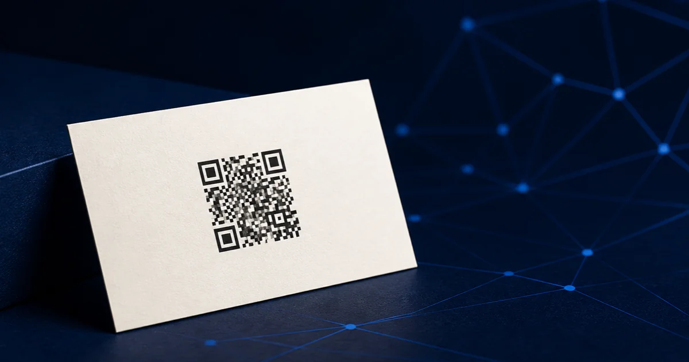

How to Make a QR Code for Your LinkedIn Profile

Copy your public LinkedIn profile URL, turn it into a static QR code, and print-test it before you hand it out. LinkedIn's own in-app code is fine for an in-person phone-to-phone exchange. A static code is the better choice when you need a branded file for a business card, résumé, conference badge, flyer, or portfolio.
LinkedIn's code or a custom QR code?
Both can get someone to your profile. The difference is what you need the code to do after that first scan.
| If you need… | Use | Why |
|---|---|---|
| A quick connection at a coffee meeting | LinkedIn's in-app code | LinkedIn puts it in the mobile app's search area, ready to show or scan. |
| A card, résumé, event badge, sign, or print file | A custom static QR code | You choose the colors, export SVG, and keep a file you can place in your own design. |
| Scan tracking or a destination you might change | A page you control | Point the QR code to a short page on your own domain, then link to LinkedIn from there. |
That last row is the part most guides skip. A static QR code permanently contains the exact destination you give it. If your LinkedIn public URL changes, the printed code does not update itself. For something you plan to use for years, point the code at a simple profile page or redirect on a domain you control, then update that page when life changes.
LinkedIn documents its own in-app QR feature for connecting with members. It is useful, but it is not a substitute for a print-ready asset you can design around. LinkedIn's help page explains where to find it in the app.
Get the right LinkedIn link
- Open your profile while signed out, or in a private browser window.
- Copy the public URL from the address bar. It should be your profile, not a search result, editing page, or a link that only works while you are logged in.
- Paste it into a new browser tab and confirm it opens your public profile.
Make the code
Open QR Codes Made Easy, leave Website selected, and paste the profile URL you tested. Then:
- Start with dark on light. It is the easiest combination for phone cameras to read.
- Use Classic or Print-safe for small print. Save the decorative styles for a larger sign or handout.
- Skip the logo unless it earns its space. A LinkedIn profile URL is already specific. Adding a logo makes the pattern denser and gives you one more thing to proof.
- Download SVG for a printer, PNG for screens. SVG stays sharp as the designer scales it. The tool generates both in your browser and never routes the code through a tracking server.
A QR code grows more complex as you add data. DENSO WAVE, the QR Code developer, documents that capacity and module count rise with the data and error-correction level. That is why a clean profile URL produces a friendlier print code than a long, parameter-heavy tracking link. See the QR capacity explanation from DENSO WAVE.
The 60-second print-proof protocol
Before a big order, export the final file, place it in the actual layout, and print one proof at final size. Then scan it with two phones, once in good light and once in ordinary room light. Confirm all three things: it scans without hunting, it opens the intended public profile, and the profile looks credible on a phone.
For a business card, keep the code roughly 0.6 to 0.8 inches wide and leave the empty border around it alone. For a sign or booth, size it for the distance people will scan from. Our QR print-size guide covers the rule of thumb and material-specific sizes. If a proof refuses to scan, work through the troubleshooting checklist before ordering the run.
Where a LinkedIn QR code actually earns its spot
- Business card: Put it on the back with a short instruction such as “Connect on LinkedIn.”
- Conference badge or leave-behind: Make the benefit obvious: “See my work” is stronger than a mysterious square.
- Résumé: Use it only if your public profile is current and reinforces the résumé. Keep the written URL too, because not every reader will scan.
- Portfolio or presentation: Link to a profile, company page, or a specific post only when that destination adds context the page does not already provide.
The little instruction matters. People scan when they know what they will get. “Connect on LinkedIn” beats “Scan me,” especially in a room full of other things competing for attention.
FAQ
Can I use LinkedIn's built-in QR code?
Yes. It is convenient for a quick connection in the LinkedIn app. Use a custom static code when you need colors, SVG export, or a file for print.
Will a LinkedIn QR code expire?
The QR pattern itself does not expire when it contains a direct public URL. It only stops being useful if the destination URL changes or your public profile is no longer available.
Should I put a LinkedIn QR code on my résumé?
Only if the profile is complete, public, and adds useful proof. Keep the written URL too, so the résumé works in print, PDF, and applicant systems.
What size should it be on a business card?
Around 0.6 to 0.8 inch is usually enough for a close-up scan. Preserve the empty margin around the code and test a printed proof.
Make your LinkedIn QR code
Generate a static, brandable code in your browser. No account, no subscription, and no tracking redirect in the middle.
Build your QR code